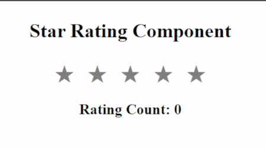

Problem Description:
Write a JS program to make the
star rating component work.

Read the entire problem description carefully to understand the
necessary details.
The HTML code that is provided holds the following components and
functions:
1.
div#star-container => Containing 5 span.star inside it.
2.
span.star => Individual star symbol with default grey color.
3.
span#count => Containing the Rating Count, set as default number of '0'
You have to a JS program such that:1. Whenever mouse hovers over any span.star:
1.1. All the stars till the target span.star, change color to yellow.
1.2. To do this you need to add class of 'star-filled' to stars that
need to be yellow.
1.3. and remove the class of 'star-filled' from all the stars that need
to be of default color. (grey)
2. Whenever any span.star is clicked on:
2.1. You need to repeat step 1 to color the stars yellow till the
target span.star
2.2. Update the Rating Count (span#count) with the star points. (Ex: If
third star is clicked, rating count becomes 3)
2.3. Store the value of star points globally, to update the colors when
the mouse hovers over or leaves any span.star
3. Whenever mouse leaves any span.star after hover:
3.1. Remove the class of 'star-filled' from all the stars beyond the
selected star points global value. (set to 0 by default)
You can refer to the HTML code to understand the specificity of the selectors.
Please
don't make any changes to the HTML and CSS code and structure. Use the above
information to write the entire JS program in the script.js file or script tag.
Refer to the
test cases to further understand the criteria to submit the problem successfully.
Feel free to access hints to get help/assistance.